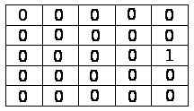

Diane Delallée & Nicolas Nowak- M1 Informatique
TD6 : Filtrage par convolutions
1.Programmartion par convolution
a. Type "type convol"
b. Calcul du produit de convolution
c. Liste des filtres

2.Filtres d'invention
a. Déplaçant l'image de 2 pixels à gauche
On va avoir un filtre de coefficient : 1, d'offest 0 et avec pour matrice :

b. Donnant l'impression de mouvement
Pour donner une impression de mouvement on va appliquer une matrice de flou. Certains flou comme le flou "zoom" ou le flou "linéaire" renforce plus ou moins cet effet/ Pour notre part nous avons choisit le filtre de flou linéaire.
Ce filtre a pour coefficient 1, pour offset 0 et pour matrice :
3.Combinaison de filtres
a. Opérations arithmétiques sur les matrices de convolution
- coefficient : 1/400
- offset : 0
- matrice :
b. Itérations d'un même filtre
Lorsque l'on répète deux fois le filtre gaussien 3x3, on obtient un coefficient de 1/32, un offset de 0 et une matrice comme suit :
Lorsque l'on repète trois fois le filtre gaussien 3x3, on obtient un coefficient 1/512, un offset de 0 et une matrice comme suit :
5.Composantes des ondelettes
a. Matrices de Gauss de taille quelconque
3x3 :
- coefficient : 1/16
- offset : 0
- matrice :
5x5 :
- coefficient : 1/79
- offset : 0
- matrice :
7x7 :
- coefficient : 1/201
- offset : 0
- matrice :
11x11 :
- coefficient : 1/673
- offset : 0
- matrice :
----------------------------------------------------------------------------------------------------------------------------------------------------------------------------------------------------------------------------------------------------
Notes personnelles :